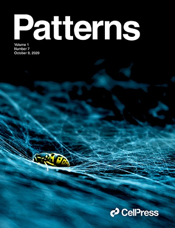
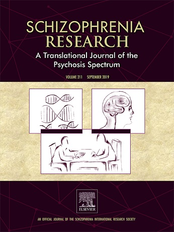
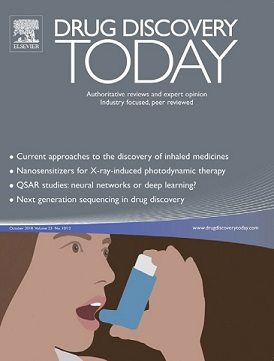
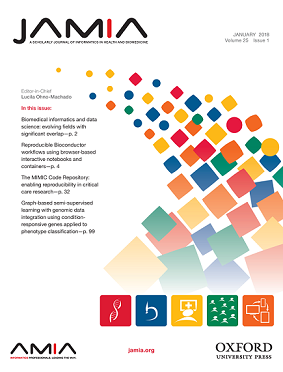

Whole-genome sequencing of 490,640 UK Biobank participants. Whole-genome sequencing provides an unbiased and complete view of the human genome and enables the discovery of genetic variation without the technical limitations of other genotyping technologies. Here we report on whole-genome sequencing of 490,640 UK Biobank participants, building on previous genotyping effort1. This advance deepens our understanding of how genetics associates with disease biology and further enhances the value of this open resource for the study of human biology and health. Coupling this dataset with rich phenotypic data, we surveyed within- and cross-ancestry genomic associations and identified novel genetic and clinical insights. Although most associations with disease traits were primarily observed in individuals of European ancestries, strong or novel signals were also identified in individuals of African and Asian ancestries. With the improved ability to accurately genotype structural variants and exonic variation in both coding and UTR sequences, we strengthened and revealed novel insights relative to whole-exome sequencing2,3 analyses. This dataset, representing a large collection of whole-genome sequencing data that is available to the UK Biobank research community, will enable advances of our understanding of the human genome, facilitate the discovery of diagnostics and therapeutics with higher efficacy and improved safety profile, and enable precision medicine strategies with the potential to improve global health.
(Paper URL).
Proteogenomic network analysis reveals dysregulated mechanisms and potential mediators in Parkinson’s disease. Parkinson’s disease is highly heterogeneous across disease symptoms, clinical manifestations and progression trajectories, hampering the identification of therapeutic targets. Despite knowledge gleaned from genetics analysis, dysregulated proteome mechanisms stemming from genetic aberrations remain underexplored. In this study, we develop a three-phase system-level proteogenomic analytical framework to characterize disease-associated proteins and dysregulated mechanisms. Proteogenomic analysis identified 577 proteins that enrich for Parkinson’s disease-related pathways, such as cytokine receptor interactions and lysosomal function. Converging lines of evidence identified nine proteins, including LGALS3, CSNK2A1, SMPD3, STX4, APOA2, PAFAH1B3, LDLR, HSPB1, BRK1, with potential roles in disease pathogenesis. This study leverages the largest population-scale proteomics dataset, the UK Biobank Pharma Proteomics Project, to characterize genetically-driven protein disturbances associated with Parkinson’s disease. Taken together, our work contributes to better understanding of genome-proteome dynamics in Parkinson’s disease and sets a paradigm to identify potential indirect mediators connected to GWAS signals for complex neurodegenerative disorders.
(Paper URL).
Plasma proteomic associations with genetics and health in the UK Biobank. The Pharma Proteomics Project is a precompetitive biopharmaceutical consortium characterizing the plasma proteomic profiles of 54,219 UK Biobank participants. Here we provide a detailed summary of this initiative, including technical and biological validations, insights into proteomic disease signatures, and prediction modelling for various demographic and health indicators. We present comprehensive protein quantitative trait locus (pQTL) mapping of 2,923 proteins that identifies 14,287 primary genetic associations, of which 81% are previously undescribed, alongside ancestry-specific pQTL mapping in non-European individuals. The study provides an updated characterization of the genetic architecture of the plasma proteome, contextualized with projected pQTL discovery rates as sample sizes and proteomic assay coverages increase over time. We offer extensive insights into trans pQTLs across multiple biological domains, highlight genetic influences on ligand–receptor interactions and pathway perturbations across a diverse collection of cytokines and complement networks, and illustrate long-range epistatic effects of ABO blood group and FUT2 secretor status on proteins with gastrointestinal tissue-enriched expression. We demonstrate the utility of these data for drug discovery by extending the genetic proxied effects of protein targets, such as PCSK9, on additional endpoints, and disentangle specific genes and proteins perturbed at loci associated with COVID-19 susceptibility. This public–private partnership provides the scientific community with an open-access proteomics resource of considerable breadth and depth to help to elucidate the biological mechanisms underlying proteo-genomic discoveries and accelerate the development of biomarkers, predictive models and therapeutics.
(Paper URL).
A. Doostparast Torshizi, et al.,
Deconvolution of Transcriptional Networks Identifies TCF4 as a Master Regulator in Schizophrenia. Tissue-specific reverse engineering of transcriptional networks has uncovered master regulators (MRs) of cellular networks in various cancers, yet the application of this method to neuropsychiatric disorders is largely unexplored. Here, using RNA-Seq data on postmortem dorsolateral prefrontal cortex (DLPFC) from schizophrenia (SCZ) patients and control subjects, we deconvolved the transcriptional network to identify MRs that mediate expression of a large body of target genes. Together with an independent RNA-Seq data on cultured cells derived from olfactory neuroepithelium, we identified TCF4, a leading SCZ risk locus implicated by genome-wide association studies, as one of the top candidate MRs that may be potentially dysregulated in SCZ. We validated the dysregulated TCF4-related transcriptional network through examining the transcription factor binding footprints inferred from human induced pluripotent stem cell (hiPSC)-derived neuronal ATAC-Seq data
(Paper URL).
 A. Doostparast Torshizi, et al.,
Cell-Type-Specific Proteogenomic Signal Diffusion for Integrating Multi-Omics Data Predicts Novel Schizophrenia Risk Genes. Accumulation of diverse types of omics data on schizophrenia (SCZ) requires a systems approach to model the interplay between genome, transcriptome, and proteome. We introduce Markov affinity-based proteogenomic signal diffusion (MAPSD), a method to model intra-cellular protein trafficking paradigms and tissue-wise single-cell protein abundances. MAPSD integrates multi-omics data to amplify the signals at SCZ risk loci with small effect sizes, and reveal convergent disease-associated gene modules in the brain. We predicted a set of high-confidence SCZ risk loci followed by characterizing the subcellular localization of proteins encoded by candidate SCZ risk genes, and illustrated that most are enriched in neuronal cells in the cerebral cortex as well as Purkinje cells in the cerebellum. We demonstrated how the identified genes may be involved in neurodevelopment, how they may alter SCZ-related biological pathways, and how they facilitate drug repurposing. MAPSD is applicable in other polygenic diseases and can facilitate our understanding of disease mechanisms.
(Paper URL).
 A. Doostparast Torshizi
A. Doostparast Torshizi, I. Ionita-Laza, K. Wang,
Cell type-specific annotation and fine mapping of variants associated with brain disorders. Common genetic variants confer susceptibility to a large number of complex brain disorders. Given that such variants predominantly localize in non-coding regions of the human genome, there is a significant challenge to predict and characterize their functional consequences. More importantly, available context-free methods do not take into account tissue/cell specificity of the diseases, limiting the ability to predict the functional consequences of common variants on brain disorders. In this study, we introduce a comparative multi-step pipeline to investigate the relative effectiveness of context-specific and context-free approaches to prioritize disease causal variants. More can be found
here.
 K.E. Borgmann-Winter, K. Wang, S. Bandyopadhyay,
A. Doostparast Torshizi, I. Blair, C.G. Hahn,
The proteome and its dynamics: A missing piece for integrative multi-omics in schizophrenia. The complex and heterogeneous pathophysiology of schizophrenia can be deconstructed by integration of large-scale datasets encompassing genes through behavioral phenotypes. Genome-wide datasets are now available for genetic, epigenetic and transcriptomic variations in schizophrenia, which are then analyzed by newly devised systems biology algorithms. A missing piece, however, is the inclusion of information on the proteome and its dynamics in schizophrenia. Proteomics has lagged behind omics of the genome, transcriptome and epigenome since analytic platforms of proteins were previously not as robust as those for nucleic acids. In recent years, however, there has been an unprecedented progress in the instrumentation (liquid chromatography (LC) and mass spectrometry (MS)), experimental paradigms, and bioinformatics of the proteome. Large-scale analyses of the schizophrenia proteome are now possible and ought to be pursued vigorously and integrated with other omics results. With that in our view, we review proteomics studies that have been conducted in schizophrenia to date, present a summary of methodological innovations of recent years in MS based proteomics and the power of new generation proteomics, and propose how such data can be analyzed and integrated with other omics results (
Publication URL.)
A. Doostparast Torshizi, K. Wang,
Next-generation sequencing in drug development: target identification and genetically stratified clinical trials. Next-generation sequencing (NGS) enabled high-throughput analysis of genotype-phenotype relationships on human populations, ushering in a new era of genetics-informed drug development. The year 2017 was remarkable, with the first US Food and Drug Administration (FDA)-approved gene therapy for cancer (Kymriah
™) and for inherited diseases (LUXTURNA
™), the first multiplex NGS panel for companion diagnostics (MSK-IMPACT), and the first drug targeting a genetic signature rather than a disease (Keytruda
®). We envision that population-scale NGS with paired electronic health records (EHRs) will become a routine measure in the drug development process for the identification of novel drug targets, and that genetically stratified clinical trials may be widely adopted to improve power in precision medicine-guided drug development. More can be found
here.
A. Doostparast Torshizi, L. Petzold,
Graph-based semi-supervised learning with genomic data integration using condition-responsive genes applied to phenotype classification, (Featured Article & Editor's Choice). Data integration methods that combine data from different molecular levels such as genome, epigenome, transcriptome, etc., have received a great deal of interest in the past few years. It has been demonstrated that the synergistic effects of different biological data types can boost learning capabilities and lead to a better understanding of the underlying interactions among molecular levels. In this paper we present a graph-based semi-supervised classification algorithm that incorporates latent biological knowledge in the form of biological pathways with gene expression and DNA methylation data. The process of graph construction from biological pathways is based on detecting condition-responsive genes, where 3 sets of genes are finally extracted: all condition responsive genes, high-frequency condition-responsive genes, and P-value–filtered genes. More can be found
here.
A. Doostparast Torshizi, L. Petzold,
Sparse Pathway-Induced Dynamic Network Biomarker Discovery for Early Warning Signal Detection in Complex Diseases. In many complex diseases, the transition process from the healthy stage to the catastrophic stage does not occur gradually. Recent studies indicate that the initiation and progression of such diseases are comprised of three steps including healthy stage, pre-disease stage, and disease stage. It has been demonstrated that a certain set of trajectories can be observed in the genetic signatures at the molecular level, which might be used to detect the pre-disease stage and to take necessary medical interventions. In this paper, we propose two optimization-based algorithms for extracting the dynamic network biomarkers responsible for catastrophic transition into the disease stage, and to open new horizons to reverse the disease progression at an early stage through pinpointing molecular signatures provided by high-throughput microarray data. The first algorithm relies on meta-heuristic intelligent search to characterize dynamic network biomarkers represented as a complete graph. The second algorithm induces sparsity on the adjacency matrix of the genes by taking into account the biological signaling and metabolic pathways, since not all the genes in the ineractome are biologically linked. Comprehensive numerical and meta-analytical experiments verify the effectiveness of the results of the proposed approaches in terms of network size, biological meaningfulness, and verifiability. More can be found
here.
A. Doostparast Torshizi, L. Petzold, M. Cohen,
Multivariate soft repulsive system identification for constructing rule-based classification systems: Application to trauma clinical data. Rule-based classification systems constructed upon linguistic terms in the antecedent and consequent of the rules lack sufficient generalization capabilities. This paper proposes a new multivariate fuzzy system identification algorithm to design binary rule-based classification structures through making use of the repulsive forces between the cluster prototypes of different class labels. This approach is coupled with the potential discrimination power of each dimension in the feature space to increase the generalization potential. To address this issue, first the multivariate variant of a newly proposed soft clustering algorithm along with its mathematical foundations is proposed. Next, the discriminatory power of each individual feature is computed, using the multivariate membership values in the proposed clustering algorithm to achieve the most accurate firing degree in each rule. The main advantage of this method is to handle unbalanced datasets yielding superior true positive measure while keeping the false positive rate low enough to avoid the natural bias toward class labels containing larger number of training samples. To validate the proposed approaches, a series of numerical experiments on publicly available datasets and a real clinical dataset collected by our team were conducted. Simulation results demonstrated achievement of the primary goals of this research. More can be found
here.
A. Doostparast Torshizi, M.H. Fazel Zarandi,
A new cluster validity measure based on general type-2 fuzzy sets: Application in gene expression data clustering. As a widespread pattern recognition technique, clustering has been widely used in various disciplines including: science, engineering, medicine, etc. One the latest progresses in this field is introduction of general type-2 fuzzy sets and the new clustering method represented on its basis called general type-2 fuzzy c-means. In this paper, the aim is to develop a robust and accurate similarity measure between general type-2 fuzzy sets. Utilizing philosophy behind this developed similarity measure, the first exclusively developed general type-2 fuzzy cluster validity index will be proposed to be used for finding the optimal number of clusters through using general type-2 fuzzy c-means. To verify quality of the proposed approaches, several heavy computations have been conducted on artificial datasets and also real gene expression datasets. Numerical comparisons reveal robustness and quality of the proposed approach compared to several similar approaches in the literature. More can be found
here.